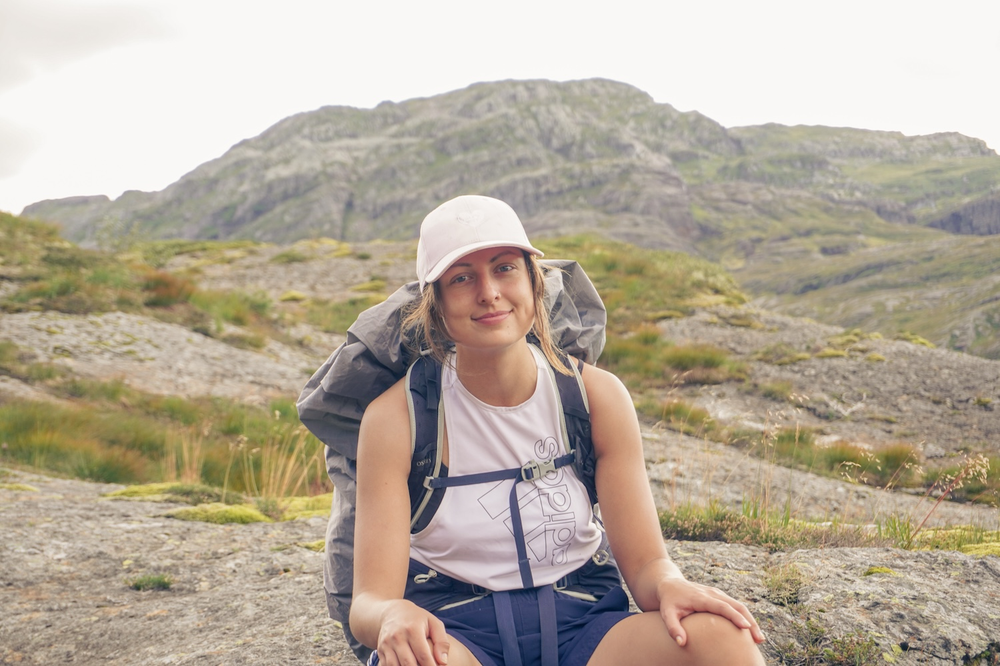
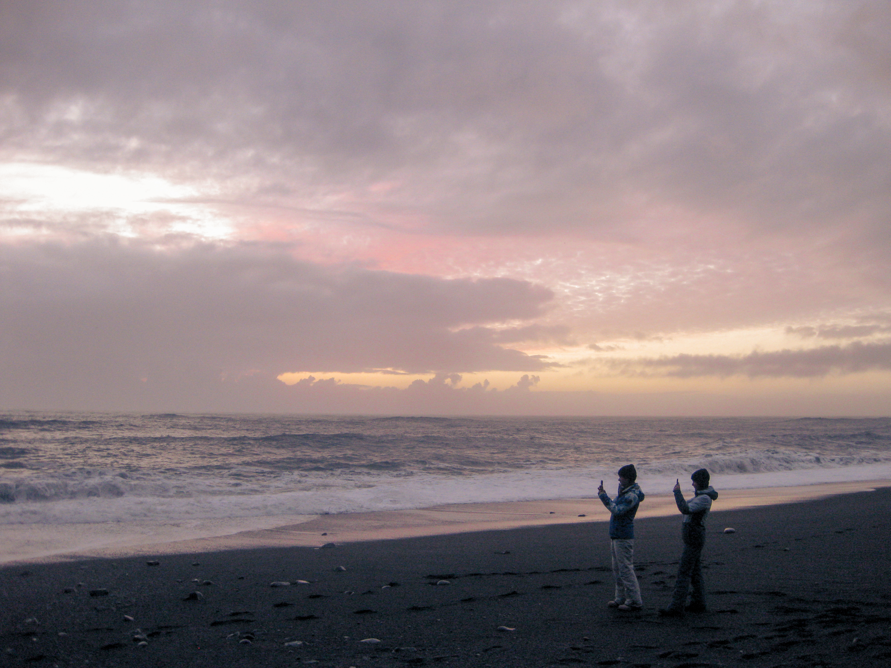
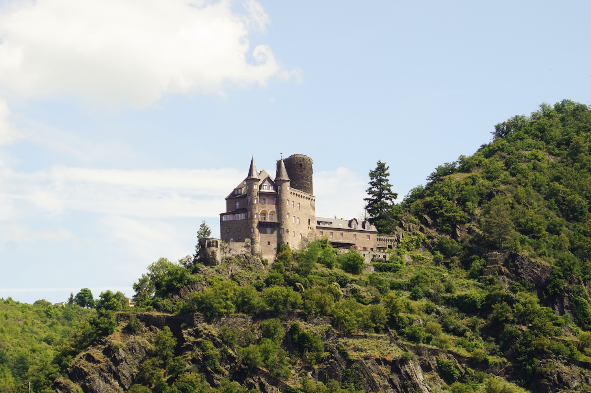

NADUA VAN GORKUM
Portfolio


<- Neem een kijkje
Fotografie
Op deze pagina vind je mijn favoriete foto’s, gemaakt met mijn Sony A6100 tijdens wandelingen en reizen. Het liefst ben ik buiten op pad om natuur en dieren vast te leggen, en de buurtkatten Batman en Kevin zijn inmiddels vaste modellen geworden. Voor het bewerken van mijn foto’s maak ik voornamelijk gebruik van Adobe Lightroom.








Design
Naast grote projecten maak ik het allerliefst persoonlijke ontwerpen voor de mensen om me heen: iets unieks dat speciaal bij diegene past. Ik vind het leuk om in Photoshop met bestaand beeld een nieuw verhaal te vertellen, vaak met een klein vleugje humor. Op mijn iPad werk ik graag in Procreate, waar ik speel met kleuren, texturen en effecten. Voor video’s gebruik ik altijd Premiere Pro en voor animaties ben ik een groot fan van After Effects.


Photoshop
Cadeaus
Deze ontwerpen heb ik gemaakt voor de verjaardagen van vrienden en familie. Deze zijn bedrukt op mokken, shirts en kaarten.


60 jaar Jos
Voor mijn vaders 60ste verjaardag heb ik een puzzel laten bedrukken. In het ontwerp zit alles wat bij mijn vader past en dingen die voor ons belangrijk en grappig zijn.

Verjaardagsuitnodiging
De uitnodiging die ik voor mijn oma’s 80ste verjaardagsfeest heb ontworpen.

Laura’s grote wereldreis
Voor de animaite van "Laura's grote wereldreis" heb ik een aantal ansichtkaarten gemaakt.


Pannenkoeken
In het project Pan & Koek, waarbij ik mijn eigen pop-up store heb ontworpen, is een van de aspecten pannenkoeken met bijzondere combinaties. Om een beter beeld te creëren heb ik de combinaties gephotoshopt.


illustraties


Projecten
Tijdens mijn opleiding Communication & Multimedia Design heb ik aan veel verschillende projecten gewerkt, van het eerste idee tot het uiteindelijke eindresultaat. Ik vind het leuk om een opdracht helemaal uit te werken en elk onderdeel goed op elkaar aan te laten sluiten. Ik duik graag diep in een onderwerp, doe onderzoek en ontdek wat een ontwerp echt nodig heeft.


Feit of fictie is een campagne gericht op Generatie X (45–60 jaar) die Facebook gebruikt als belangrijkste nieuwsbron. Omdat Facebook geen content meer factcheckt en algoritmes gebruikers steeds dieper in filterbubbels trekken, is deze generatie extra kwetsbaar voor misleidende informatie en complottheorieën. Feit of fictie biedt een laagdrempelige oplossing: een browser-extensie en de bijbehorende website. Het doel is niet om mensen van Facebook weg te jagen, maar om ze met een beetje humor en een kritische blik bewuster te laten omgaan met wat ze dagelijks voorbij zien komen.
Hoe kan ontwerp Generatie X (45–60 jaar) activeren om kritisch en bewust te kijken naar de betrouwbaarheid van content op Facebook, op een laagdrempelige manier die aansluit bij hun bestaande gebruik van het platform?

Webextensie
- Laagdrempelig.
- Betrouwbaarheidsoordeel.
- Laadcirkel, aantal gescande berichten, info-knop, foutmelding.
- Iedereen kan installeren (videouitleg).
- ‘Controleer’-knop
- Scan Facebook
- AI-analyse via Chutes/Qwen API
- Betrouwbaarheidsoordeel

Website
- 5 pagina’s.
- Mobiel responsive.
- www.feitoffictie.com echt live.
- Home
- Informatiepagina
- Extensie + uitlegvideo’s
- Webshop
- Over ons

Middelen
- Stickers (kritisch + algemeen).
- Flyers bij bibliotheek.
- Telefoonhoesje voor mobielgebruik.
- Mokken voor werkvloer.


Middelen


OnHANDig
Dit is ZWAAR onHANDig.
Een zelfontworpen onderzoekstool die laat ervaren hoe het is om handen te hebben die twee kilo zwaarder zijn, en een experimenteel onderzoek naar hoe dit je waarneming, beweging en dagelijkse handelingen beïnvloedt.


Fire Hazard
Een kaartspel die ik samen met 3 medestudenten heb gemaakt tijdens mijn Minor Game-Design in Finland.
LIAR LIAR PANTS ON FIRE
Don't let them know otherwise your ass will show
You and your friends have gathered around to play a game of cards, when suddenly you feel a burning sensation in your upper leg. An ember from the nearby fireplace has jumped right in your pocket and set your pants on fire! Your friends are starting to raise their eyebrows at your red-hot face. Quick, make up a lie so they won't discover your bare bottom! But smoke is rising up from beneath one of your friends asses, maybe they are hiding something as well...


Foto's gemaakt door Evelien Denneman
Bakkie Babbel
Hoe kan ik namens Bibliotheek Midden-Brabant onverwachte ontmoetingen tussen bezoekers in de publieke ruimte stimuleren? Met als doel de interactie tussen bezoekers uit verschillende ‘bubbels’ te verhogen.


Het concept

Met Bakkie Babbel en De Praat Tafel willen wij onverwachte ontmoetingen stimuleren door de drempel tot contact te verlagen. Met het Bakkie Babbel kun je aangeven dat jij open staat voor een gesprek. Het kopje of de beker met fel gekleurde strepen laat duidelijk zien dat jij open staat voor een snelle babbel of een lang gesprek.
Weet je niet waar je het over moet hebben? Geen probleem! Op het Bakkie Babbel staat een laagdrempelig gespreksonderwerp zodat je altijd iets hebt om over te praten!
De Praat Tafel tilt dit naar een nieuw niveau door een aangewezen plek te creëren met oneindig veel gespreksonderwerpen. Van luchtig en simpel tot wat meer serieus, alles komt aan bod.
Promotie


Expositie op school


Pan & Koek
Een pop-up store gemaakt om pannenkoeken weer net zo bijzonder te maken als vroeger.

Een pop-up store waar je zelf de gekste pannenkoekencombinaties kunt samenstellen, een eigen naam kunt bedenken en jouw creatie kunt insturen als kanshebber voor de favoriet van de week. Liever inspiratie? Kies dan een combinatie die door anderen is bedacht en getest.
Het concept is gericht op jongeren en jongvolwassenen en laat zien dat pannenkoeken veel meer zijn dan alleen stroop en poedersuiker. Door creativiteit, interactie en een speelse uitstraling wil de pop-up store pannenkoeken weer leuk en verrassend maken.


Generatief
Je kast in beeld. Een regelset gecreëerd om gevarieerde output te genereren. Alle kleding items uit je kast worden gerepresenteerd op de buitenkant van je kast in de vorm van een cirkel. Hoe de cirkel eruit komt te zien is op basis van welk kledingmerk het item is, in welk land het geproduceerd is, de stof waarvan het gemaakt is, het soort kledingstuk dat het is en de prijs ervan.


Speculatief
Een speculatief project over spionage vliegen aangestuurd vanuit de kerk, die aanhangers van het geloof thuis in de gaten houdt.


Out Of It
Een speculatief project over het gevolg van de fast fashion industrie.
Wat als iedereen nog maar
één outfit mocht dragen
Zou je de outfit die je nu aan hebt dragen bij een sollicitatiegesprek? Bij je trouwdag? Zou je hem ook nog morgen dragen? En overmorgen? En overovermorgen? Zou je deze outfit de komende 25 jaar dragen? Wat als je geen keuze zou hebben. Wat als de fast fashion industrie zo erg is doorgedraaid dat er geen keuze meer is. Zo erg dat alles moet veranderen, alles behalve je outfit. In deze wereld heb je één outfit en daar moet je het mee doen. Hoe ziet een wereld eruit waarin mensen weggehaald worden van de eindeloze trends en overconsumptie.


Hoe?
Hoe wordt er gecontroleerd?

Wat valt er onder één outfit?
Hoe zou een kleding kast voor één outfit eruit zien?


Dezelfde outfit maar toch anders

Gevolg
Speciale gelegeheden in je enige outfit

Werken in je enige outfit

Wat gaat er met de fashion media gebeuren?

Wat gebeurd er met fabrieksarbeiders?


Video
Stopmotion
Jaren 80 speelgoed reclame
Deze stopmotion is een ode aan het plezier van spelen met speelgoed. Handgemaakt in samenwerking met een team van innerlijke kinderen :)
International animation project
Een stopmotion voor kinderen waar zij zelf geluid aan kunnen toevoegen, in samenwerking met het HÖR.SPIEL Museum in Duitsland en de LAB University Finland. Volledig analoog met papier en fotocamera. Een verhaal over gekke vormen in een geometriche wereld.
Animatie
Laura's Wereldreis
Voor mijn zus maakte ik een korte animatie waarin ik animatie en Photoshop combineerde. Ze droomde toen van een wereldreis, en deze shortstory gaf alvast een klein voorproefje van dat avontuur.
Berry's Koffie Café
Voor een schoolproject maakte ik een animatie van een interactief scherm voor een café. Berry, een vrolijke koffiebeker, is het gidskarakter dat je helpt bij het maken van je keuzes.
Korte animatie
What's Buggin'
Een mobilegame die ik samen met 3 medestudenten heb gemaakt tijdens mijn Minor Game-Design in Finland.
BREW POTIONS & HELP BUGS WITH THEIR PROBLEMS
A wonderful cozy game where a witch the size of a button sets out to help the lil critters in the forest. They all have their mental health struggles: Time management, creative blocks, you name it. But this little witch can brew magical potions, using ingrediënts with strange effects like cloud moss that calms the mind, or lightbulb flowers for bright ideas. Enjoy a whimsical journey!


3D modeling


Karakters


Groen Geluk.
Samen met een redactie stagiair heb ik dit boekje gemaakt van begin tot eind; concept, inhoud, structuur, styleguide, vormgeving, illustraties. Het boekje lag meerdere maanden in de schappen van Nederlandse en Belgische supermarkten en boekhandels, waaronder Albert Heijn, Bruna, Primera en Standaard Boekhandel
“Met de inhoud van dit boekje hopen wij je te begeleiden op jouw weg naar rust, ontspanning en geluk.”


Over mij
Hoi,
Mijn naam is Nadua. Ik ben 21 jaar oud, maar als je me kent, zou je misschien denken dat ik negentig ben. Ik houd van lezen, haken/breien/naaien, bakken, tekenen en documentaires kijken. Ondanks mijn "oma-kant" ben ik ook heel avontuurlijk. Ik ga graag hardlopen, fietsen, wandelen in het park en nieuwe steden bezoeken.
Koud weer is mijn favoriet, omdat ik dan lekker binnen kan lezen op de bank met een kopje warme chocolademelk en de kaarsjes aan. Mensen zouden mij omschrijven als geduldig, positief en af en toe een beetje gek. Ik ben graag alleen, maar ik vind het ook leuk om nieuwe mensen te leren kennen.
Mijn grootste droom voor de toekomst is om in een knus huisje midden in een bos in Noorwegen te wonen, met een eigen atelier waar ik heel de dag creatief bezig kan zijn en een grote tuin vol zelfgekweekte groenten en fruit.
liefs,
Nadua
Contact
Email-address:
nadua.van.gorkum@gmail.com
Telefoonnummer:
+31 6 40999736


Nadua, 2026